Save Gillman Forest
Gillman Forest has stood for generations. Within months, a decision could be made to clear it. And once a mature forest is lost, no amount of replanting brings it back. Add your voice today, and help us keep Gillman standing for generations to come.
What’s happening

They have agreed to keep more.
Nobody has said how much.
On 14 August the Minister of State for National Development said more greenery will be kept at Gillman than the July plan showed. No figure was given. In his own words, the government will “work out exactly how much more”, and the plans are to be finalised over the coming month or so. The July plan keeps 40 per cent of the green spaces here. Everything above that number is being decided in the next few weeks, which means a letter sent now arrives while the line is still being drawn.
This is not unprecedented.
In 2021, Dover Forest drew 50,000 signatures and nearly 1,800 written submissions. The plans changed, and the western half of the forest was kept.
Feedback moved it once, and it has already moved this plan. What is still open is how far.
So what should they keep?
At Maju, the Nature Society has named a figure: two thirds of the forest. Gillman has no number of its own, and the adjustment being drawn this month will fill that silence one way or another. Here is what to ask for, all of it drawn from the Government’s own reports.
A forest, not a strip
The July plan retains 14.6ha inside a 40ha boundary. Ask for a single contiguous block of forest large enough to work as habitat. The president of the Nature Society put it plainly on 14 August: a slice of land and a patch of stream is not a home for anything.
A 60m corridor, by the report’s own rule
The Environmental Impact Assessment does not merely suggest 60m. It calls 60m the minimum needed to protect a corridor’s core from edge effects, and it sets out when that minimum applies. At the former Keppel Club site, 30m was used where development sat on one side of the habitat, and a 60m central corridor where development sat on both sides, to account for the double edge. The report says Gillman’s context is similar. Gillman’s new corridor is the spine of a housing estate, with development on both sides, so by that rule it is a 60m corridor. The plan gives it 30m.
Say what crosses the road
The corridor is aligned, in the report’s own words, to suit “volant fauna”, with birds and arboreal mammals named as the target species. No eco-link, land bridge or wildlife underpass appears anywhere in the plan. The link to Labrador rests on birds flying across a highway, and the evidence given for that is a personal communication about a single species. The report itself rates loss of connectivity as Moderate Negative for 63 species, including the Sunda pangolin, which it names as vulnerable to roadkill moving between forests. Ask which animals can actually reach Labrador on foot.
Bring the eastern cluster inside the line
The ground between two drain channels off Telok Blangah Street 31 holds a narrow strip of native-dominated forest, three Critically Endangered Ficus sinuata, two clusters of the Vulnerable Cissus repens and a Vulnerable Litsea umbellata, and it sits outside the retained area with no explanation given. The figs are young epiphytes that established on a living host tree, which is something no transplant can carry with it.
Publish the arithmetic behind “fewer homes”
More greenery is only a cost to other Singaporeans if the number of homes and the density were fixed to begin with, and neither has been published. Ask how many units were assumed at Gillman, at what density, and what the same homes would cost on land already cleared and already zoned.
Two of these, in your own words, is a strong letter.
 After Parliament
See what is still open
The Government will build. How much forest survives, the corridor, the homes and the heritage are still on the table. Read the record.
After Parliament
See what is still open
The Government will build. How much forest survives, the corridor, the homes and the heritage are still on the table. Read the record.
 Read
Beyond consultation: what Gillman revealed about how we plan
Melissa Low of NUS on why residents were left unanswered, and what a planning system that listens would do differently.
Read
Beyond consultation: what Gillman revealed about how we plan
Melissa Low of NUS on why residents were left unanswered, and what a planning system that listens would do differently.
 Read
A former HDB planner on how these plans get made
Yong Feng masterplanned the Keppel Club site from inside HDB. On zoning, housing targets and why the trees still went.
Read
A former HDB planner on how these plans get made
Yong Feng masterplanned the Keppel Club site from inside HDB. On zoning, housing targets and why the trees still went.
 Listen
Listen to Gillman on Teh Tarik with Walid
Hear Melissa Low and Muhd Nasry make the case
Listen
Listen to Gillman on Teh Tarik with Walid
Hear Melissa Low and Muhd Nasry make the case
What clearing Gillman would destroy
Gillman is not empty land. It is a mature forest decades in the making that cannot be recreated, a living link between Berlayer Creek, Labrador and the Southern Ridges, and one of Singapore’s most effective natural cooling landscapes. It is a sanctuary where people walk, breathe and restore their health, and one of the rare places where heritage, art and nature meet. Clear it, and none of it comes back.
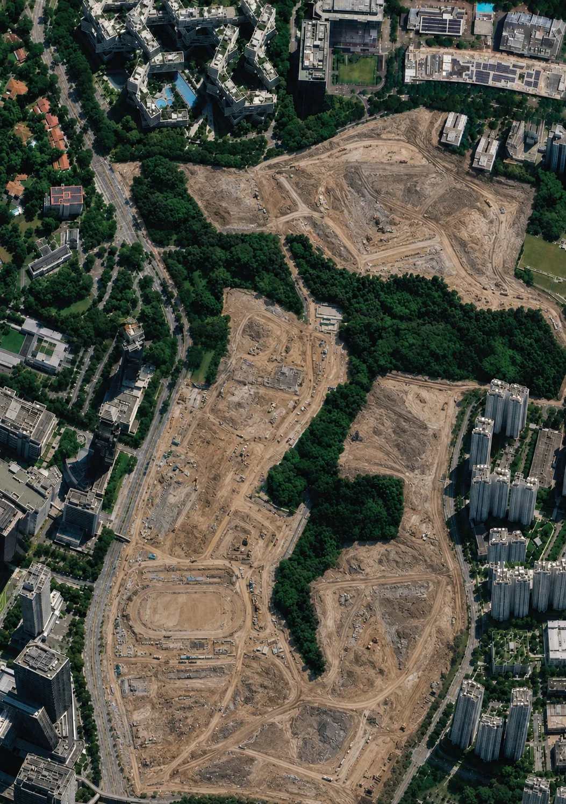
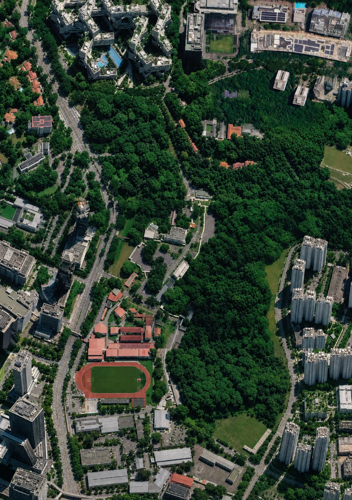
↔ TodayIf cleared Right: indicative, residents’ visualisation. Base imagery © Google
Decades of natural regeneration that cannot simply be recreated.
A vital link between Berlayer Creek, Labrador Nature Reserve and the Southern Ridges.
One of Singapore’s most effective natural urban cooling landscapes.
Daily access to walking, forest bathing, birdlife and restorative green space.
Proven benefits for physical health, mental wellbeing and quality of life.
A rare place where heritage, arts and nature exist together.
Once cleared, these ecological and community values cannot be fully restored.
Who else lives here
Gillman is somebody’s habitat. These are its residents and the layers of forest they depend on, all photographed here by people who walk this ground.
Nests inside natural cavities in old, large trees. Those hollows take decades to form, so a replanted forest cannot offer them.

Singapore’s national bird, here feeding at a heliconia. It pollinates as it moves between flowering plants along the forest edge.

Follows the fruiting season through the canopy, carrying seeds well beyond the tree it fed in. An Asian glossy starling feeds on the same palm below it.

A forest specialist and a skilled mimic. It hunts insects flushed by other birds, so it needs a forest with a full community living in it.

Chisels nest holes into old and dying trees. Other species move into those holes afterwards, so a forest cleared of ageing timber loses them too.

Moves in loud family parties through the dense low growth, which is the first layer to go when land is cleared.

Native, nocturnal and seldom seen. It spreads the seeds of the fruit it eats, quietly replanting the forest as it goes.

A stream threads through the forest floor. It supports its own community of life and feeds into the wider Berlayer Creek system.

Ferns, saplings and climbers below the canopy. This is where most of the forest’s smaller residents feed, shelter and nest.

Mature trees closing overhead. The layered structure is what cools the air, holds the soil and houses everything above.
Gillman sits between Berlayer Creek, Labrador Nature Reserve and the Southern Ridges. Species like these move between those green spaces. Remove the link in the middle and the habitat on either side is left fragmented.
Gillman is not fighting alone.
Across the island at Sunset Way, residents are running the same campaign for Maju Forest, a mature secondary forest where 15 of 23 hectares are proposed for clearing to make way for housing. The two plans were announced in the same Master Plan, questioned in the same parliamentary sitting, and carry the same gaps in how the loss was weighed. What is decided at Gillman and Maju will shape how Singapore treats every wild space it has left.
If you have written for Gillman, lend Maju your voice too.

Already happened
The gathering at Hong Lim Park, 16 August
SG Climate Rally called a gathering at Hong Lim Park in response to the redevelopment plans, covering Gillman Barracks and Maju Forest alongside other sites. On Sunday afternoon the lawn filled. People came to speak about access to nature, the loss of forests and natural spaces, and to ask that decisions on land use are made with transparency and genuine public involvement, with residents from the Gillman and Maju campaigns running booths at the edge of the crowd.
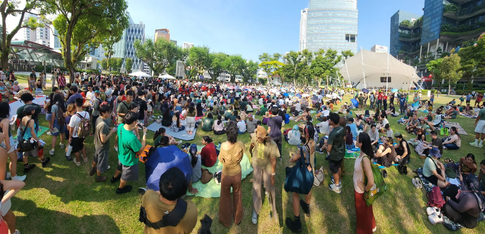
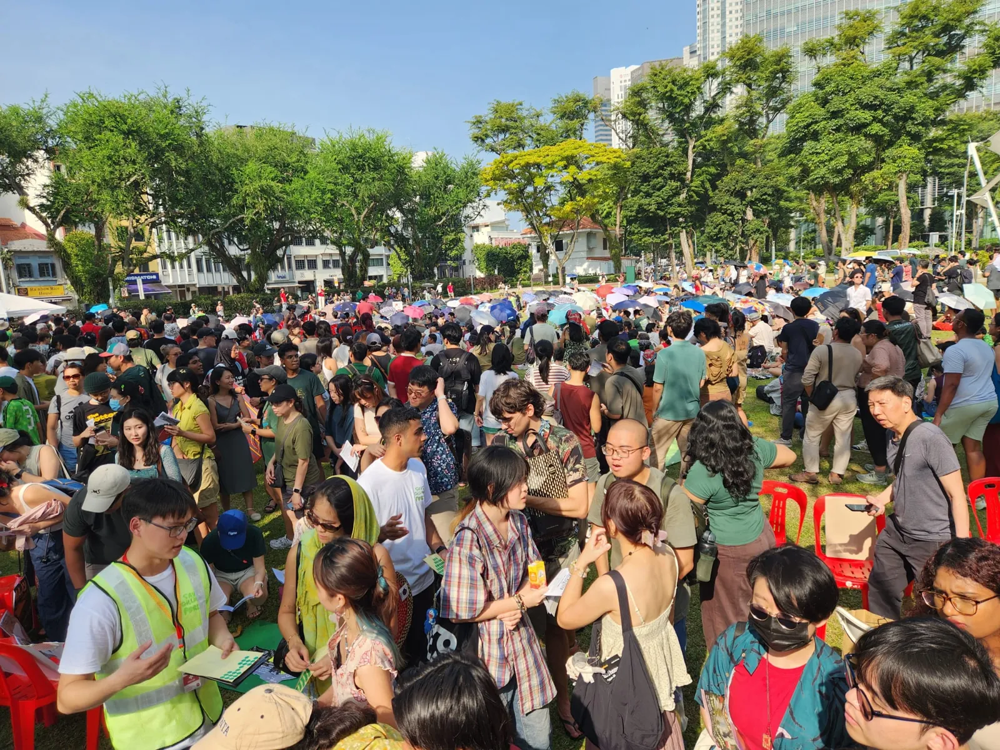
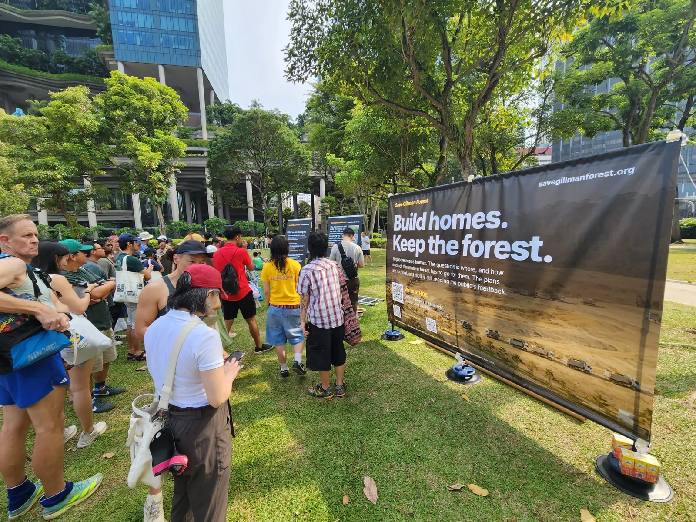
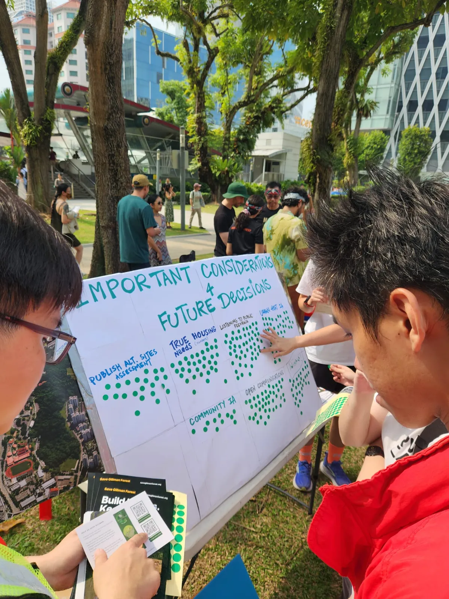
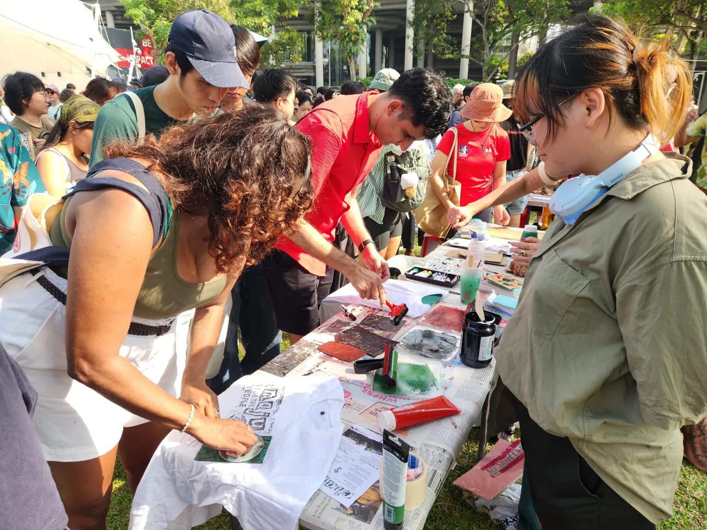
- Date
- Sunday, 16 August 2026
- Time
- 3.30pm – 6.30pm
- Where
- Hong Lim Park
- Organised by
- SG Climate Rally, not by this group
Already happened
The community walk, 8 August
Residents walked from Telok Blangah Hill Park along the Forest Walk and into Gillman Barracks, following the connections between nature, heritage and community that so many people spoke about at the 30 July dialogue. The route, the flyer and the meeting point are kept here as a record, and for anyone who wants to walk it on their own.
- Date
- Saturday, 8 August 2026
- Time
- 8.00am
- Meeting point
- Telok Blangah Hill Park, at the Forest Walk entrance
- Ends at
- Kyuukei Coffee, Gillman Barracks
- Duration
- About 1.5 to 2 hours
The route goes at a leisurely pace, with pauses along the way to take in the ecology, the heritage buildings and the community spaces. It is worth walking at any time. Every person who walks it is one more person who has stood in this forest.

Google Maps directions to starting point
Scan this with your phone and Google Maps will route you from wherever you are to the exact spot we are meeting.


Tap any image to enlarge.
Letters & reports
Every letter counts. Letters get read, logged and answered, and each one puts Gillman on another desk. Fifteen minutes, in your own words, is enough. If you are not sure where to start, write to the two people at the top of this list.
- Alvin Tan, Minister of State for National Development, who answered for the Government in Parliament on 4 August and is leading the response on both sites.
- Prime Minister Lawrence Wong, via the PMO website, since the final balance between housing and forest is a whole of government decision.
- Grace Fu, Minister for Sustainability and the Environment, whose ministry residents have repeatedly asked to take a leading role.
- Your own MP, whoever that is. MPs raise what their residents write to them about, and 4 August showed they do.
Contacts for the MPs covering the area and the key decision makers:
Scroll the table sideways to reach the email addresses.
| Name | Constituency | Government position | Email address |
|---|---|---|---|
| Chan Chun Sing | Buona Vista | Coordinating Minister for Public Services and Minister for Defence | chan_chun_sing@mindef.gov.sg |
| Alvin Tan Sheng Hui | Moulmein-Cairnhill | Minister of State for Trade and Industry, and National Development | alvin.tan@pap.org.sg |
| Joan Pereira | Henderson-Dawson | Member of Parliament | joan.pereira@pap.org.sg |
| Foo Cexiang | Tanjong Pagar-Tiong Bahru | Minister of State | Foo.Cexiang@pap.org.sg |
| Rachel Ong | Telok Blangah | Member of Parliament | rachel.ong@pap.org.sg |
| Grace Fu | Minister for Sustainability and the Environment | grace_fu@mse.gov.sg |

The dialogue
The dialogue with our Ministers, MPs and the representatives of HDB, URA, NParks and MSE is ongoing. Here is where it stands.
Where things stand: the plan is being redrawn
On 14 August, Minister of State Alvin Tan announced that the plans have been adjusted. More green space will be kept at Gillman Barracks and at Maju Forest than the July plans showed, at the cost of fewer homes. He said the plans were never final, gave no figure for how much more will be kept, and said the Government will “work out exactly how much more”, with the plans to be finalised over the coming month or so.
The adjustment is the product of the dialogue this page records. It was worked out with the nature groups which responded to the environmental assessments, and it follows residents drafting their own proposals, organising dialogues and petitioning their MPs, and nineteen MPs putting questions to Parliament on 4 August. Engagement has carried on after the formal feedback window closed on 6 August. What the nature groups have asked for at Gillman is a wider central corridor with real volume, strengthening the links north towards Telok Blangah Hill Park, Labrador Nature Reserve and Berlayer Creek, and east and west towards HortPark and Mount Faber Park.
That leaves one question open, and about a month to answer it: how much more. The July plan keeps 40 per cent of the green spaces here, and everything above that number is being decided now, so a letter sent in this window arrives while the line is still being drawn. HDB’s written channel remains open, and HDB has committed to publishing a report answering the public feedback and setting out the changes. Under “Category of Feedback” choose Land Use Plans.
Send your feedback to HDB


4 August 2026 — Parliament
More than 20 questions on Gillman Barracks and Maju Forest were filed for this sitting by members from both sides of the House. Answering for the Ministry of National Development, Minister of State Alvin Tan said the plans for both sites are not final, that engagement with stakeholders will continue after the consultation closes on 6 August, and that agencies will publish a report summarising their responses to the feedback and any changes made to the plans.
On Gillman specifically, he said the Government is studying how to retain most of the native dominated secondary forest, how to maintain ecological connections east to west between Telok Blangah Hill Park and HortPark and north to south towards Berlayer Creek and Labrador Nature Reserve, and how to retain all buildings of exceptional heritage significance and most of those rated high. He said the number of homes has not been fixed, that the current conceptual plan already carries fewer homes in order to keep green and heritage areas, and that conserving more would mean building fewer still.
The questions residents had asked were these:
- Which parts of the plan remain open to change, and whether site clearance or tenders will wait for the feedback to be considered.
- Whether alternative sites were evaluated, and whether a smaller footprint or lower density at Gillman itself was assessed against the current plan.
- Whether dialogue sessions with residents, heritage groups and nature groups will follow once feedback closes on 6 August.
- What threshold of harm would set a site aside, given that both assessments rate the biodiversity impact as major negative even after mitigation.
- Whether under-used state land, including the grounds of black and white bungalows and ageing low-rise estates, was assessed first.
- What urban heat modelling was done, and what the effect on surrounding homes is expected to be.
- Whether the phased clearance plan includes checkpoints where monitoring data is reviewed before further clearance is authorised.
3 August 2026 — Gillman and Maju on Teh Tarik with Walid
Episode 158 of the programme was given over to a discussion of Maju Forest and Gillman Barracks, with Melissa Low, Head of the NUS Sustainability Academy, and Muhd Nasry, Executive Director of Singapore Youth Voices for Biodiversity. Melissa Low helped organise the residents’ dialogues at Telok Blangah.
Watch the discussion Instagram1 August 2026 — dialogue with MP David Hoe, MP Lee Hui Ying and the Nature Society
A session at EtonHouse, Orchard Road, hosted by the Young PAP Advisers and moderated by a member of the Nature Society, held under Chatham House rules. It opened with an explanation of how an Environmental Impact Assessment is commissioned and what it covers, then moved to open questions and four smaller discussion groups.
Recurring themes from the floor:
- The four-week feedback window is too short for a report of this size, and is the same regardless of how large the development is.
- An EIA is commissioned only after the decision to redevelop has been made, so it can mitigate but not reconsider. The Nature Society noted there is no precedent for such a decision being reversed, and that the time to be heard is during Master Plan brainstorming — while adding that feedback through the HDB channel is still worth giving.
- The assessment covers flora and fauna but not urban heat, cultural value, opportunity cost, or the interests of future generations.
- Doubts about whether mitigation measures are enforced, citing Berlayer Creek at the former Keppel site, where trees and mangroves were lost despite similar assurances.
- Questions about the transparency of the housing demand figures behind the plans.
- Calls for the Ministry of Sustainability and the Environment to take a leading role.
- On Gillman specifically: most of the native-dominated forest would be kept, but a large area of exotic forest would be lost, and the corridor to Labrador Park at 30 m is narrower than it should be. Gillman is the connector between the Southern Ridges and Labrador Park; without it, the forests fragment.
MP David Hoe asked each group for the one question they would most want put to Parliament, and said that public feedback can make a difference — “nothing is cast in stone”.
30 July 2026 — dialogue with MP Rachel Ong and representatives of HDB, URA and NParks
26 July 2026 · Gillman Barracks and Forest Community Forum
Residents came together for a community-led dialogue, “The Future of Gillman Barracks”, to understand the plans and share their views ahead of the sessions with the planning agencies.

In the news
What the press has written about Gillman Barracks since HDB released its studies on 10 July 2026, including the coverage that deals with Maju Forest alongside it.
Commentary and opinion
These are the views of their authors and of the publications that carried them.
-
WTC Wrap: 15 August 2026
Kirsten Han’s weekly newsletter takes issue with how the retained greenery announcement was framed, as a concession residents must pay for in lost homes, and asks whether a consultation that let people participate from the start would have surfaced options beyond that single trade off.
-
If Singapore wants citizens to “Go Beyond”, we need to shape better infrastructure for participation
Heng Li Seng takes this year’s National Day theme at its word. The official framing casts “Go Beyond” as a call to do better for Singapore and to show greater care and concern for one another. His argument is that if citizens are asked to go beyond, the state has to build the means for them to take part in the decisions that shape the country, rather than inviting comment once the decision has already been made.
-
Maju for the people? A former HDB planner’s thoughts
Yong Feng, who masterplanned the Keppel Club site as an HDB planner and sat through its environmental assessment, describes the process from the inside. He writes that a plot shaded “Residential” on the Master Plan is treated as ready for the taking whatever lies beneath it, that planners are not given the reasoning or the figures behind the housing targets they are working to, and that almost every existing tree went even inside the green corridors he had drawn to keep them. On Gillman he notes that the plans were shown at the Draft Master Plan 2025 exhibition as a single dot on one panel among more than fifty, so that a visitor could reasonably have assumed the housing would replace the barracks buildings rather than the forest beside them. His conclusion is that the impact assessment framework as it stands is a method of containment rather than a real decision point, and that only sustained public pressure has forced the plans to be defended at all.
-
Beyond consultation: Strengthening public participation in Singapore’s planning system
Melissa Low of NUS reads the Gillman and Maju episode as a test of the planning system rather than of one site, setting out what residents did with the technical reports and what the response left unanswered. She asks whether an Environmental Impact Assessment is meant to shape a decision or only to soften one, notes that a “Major Negative” finding was never said to be capable of stopping a project, and argues for earlier engagement, a Community Impact Assessment alongside the environmental and heritage studies, and a published response matrix showing how each submission was weighed. The clearest account yet of why the process itself became the argument.
-
Sixty-one years on, the record says everything is fine
A National Day editorial that sets the Gillman consultation beside the acquisition of 38 Oxley Road, arguing that public value was allowed to decide whether one site was developed at all, while at Gillman the severest ecological rating the assessors could give was only ever permitted to change the shape of the development rather than whether it went ahead.
-
MND will publish what public feedback changed. Whether MSE shaped the plans remains unclear
Sets out the ministry’s promise to publish agencies’ responses and any changes to the plans, then asks whether that report will also show what environmental advice went into the decision and how much weight it carried.
-
Calvin Cheng says facts should trump emotion. The facts he’s citing aren’t the ones in question.
Answers the claim that these are merely secondary forests by setting out what the Gillman environmental assessment actually recorded, and notes that no threshold of ecological harm has been published at which a site would be set aside rather than simply mitigated.
-
The forest or housing choice was never the real one
On renewal of older estates as an alternative source of homes.
-
Gillman dialogue exposes the limits of the NIMBY label
Argues that the dialogue guest list was narrow, not the public concern, and that the housing assumptions behind the need have not been published.
-
Singapore saved a bungalow for the public good. Why not two forests?
On what the state has been willing to protect before now.
-
Singapore’s City in Nature vision needs more space for its forests
Andie Ang and Sankar Ananthanarayanan, who co-authored the Singapore Terrestrial Conservation Plan, argue that the country has shown what it can do for nature and should now decide what it will not trade away. They note that undeveloped land is treated as a land bank, its ecological value considered only later through an impact assessment, and say they know of no case where a proposed development was cancelled because an assessment found significant value. Their proposals are concrete: published, science-based criteria for when ecological value takes precedence, an “ecological first pass” for undeveloped land above a certain size before it is zoned for development, and development focused on brownfield sites and scrublands. They hold up Eco-Link@BKE as proof that Singapore already knows how to build for connectivity when it chooses to. Behind the ST paywall.


Reporting
-
Massive crowd rallies over Maju Forest, with GCBs and golf courses taking centre stage
The account that records what the crowd pressed for beyond the two sites, with Good Class Bungalows and golf courses raised from the stage as land that could be built on first. It notes the Save Gillman Forest booth among those run on the day, one of which invited people to vote on the factors that should count in land use decisions, among them animal welfare, public feedback and urban heat. The piece puts the loss under the original plans at no less than 10 hectares of forest at Gillman, and records that MPs from several parties came.
-
Singaporeans urge forest protection at rally as housing plans spur concerns
The first account of the campaign to reach a regional readership. Kolette Lim reports the Hong Lim Park gathering with her own photographs, records the crowd chanting “Hands off, hands off Gillman”, and describes the fliers handed out showing mock ups of how the earmarked sites would look if cleared without proper protection of the green spaces. The piece puts the figure at stake at Gillman at no less than 10 hectares of forest, and treats the turnout as a large public display of concern rather than a local dispute.
-
More than 1,000 rally at Hong Lim Park over Maju Forest, Gillman Barracks plans
Koh Wan Ting reports the gathering two days after the Government said it would keep more greenery at both sites. CNA put the turnout above 1,000 from its own aerial shots, where the organisers counted more than 2,000. The three-hour programme ran to speeches, poetry, postcard writing and a sing-along, and the participants quoted make the point the campaign has been making all along: the forest has not been cleared yet, so it is not too late, and once it is gone it is gone.
-
Over 2,000 people turn up at Hong Lim Park over Maju Forest & Gillman Barracks plans
Izza Sofia’s account carries the scale and the voices. A thousand programme booklets were gone within two hours of the start, and more than 250 postcards to MPs were written on the day and are being scanned and sent on. The rally set out three demands: protect nature areas, let the people decide, and redefine progress. Among those quoted is a mother who brought her three young children because she believes they need to be part of the conversation.
-
Over 2,000 turn out at Hong Lim Park rally for Maju Forest, Gillman Barracks
The fullest record of what was actually said, speaker by speaker across nine of them. A residents’ declaration asks that assessments weigh avoidance ahead of mitigation, that agencies explain them in more than one language and meet people in person, that the housing demand figures and timelines behind decisions be published, and that these standards be made legally enforceable, including keeping the option not to develop a site at all. An ecologist sets Singapore against Malaysia, Indonesia, Vietnam, the Philippines, Japan and Hong Kong, where assessments carry the force of law and can stop a development. A journalist notes that as many as six feedback windows, Gillman among them, overlapped in recent months, and cites polling showing 79 per cent support for building on brownfield land before greenfield.
-
Nature lovers and activists hold rally in Hong Lim Park
The Straits Times records the rally and what the speakers asked for: more information about the forested land earmarked for housing, and about the factors weighed in reaching the decision. The report sets the gathering against the 14 August announcement and the plans still to be finalised. Behind the ST paywall.
-
More greenery retained, fewer homes planned for Maju Forest, Gillman Barracks sites after public feedback
Alvin Tan says the government will keep more greenery at Gillman Barracks and Sunset Way than the plans released on 10 July, and that this will mean fewer homes on both sites. How much more has not been worked out. The plans as they stand keep 40 per cent of the green spaces at Gillman and 35 per cent of the forest at Maju, and nature groups have asked for a wider central corridor at both. Leong Kwok Peng of the Nature Society says the highest aspiration is that the forest is not touched at all, that two thirds of it should be retained if it is, and that a habitat needs volume rather than a slice of land and a patch of stream. The plans are to be finalised over the coming month or so, with a report summarising the feedback and the agencies’ responses published first.
-
More green spaces to be retained in Gillman Barracks, Maju Forest: Alvin Tan
The same announcement, with the minister saying the current plan was never final and that the trade off for more greenery is fewer flats. He did not take questions from reporters. Isabelle Liew sets out how the position was reached: residents drafting their own proposals, organising dialogues and petitioning their MPs, and nineteen MPs putting questions to the House on the housing and environment balance, the effectiveness of public feedback and the transparency of the planning process.
-
More greenery to be retained at Maju Forest & Gillman Barracks but we’ll have to accept fewer homes on both sites: Alvin Tan
Xueting Wu’s account of the same doorstop carries what the Nature Society said alongside the minister. Its president Leong Kwok Peng gave his own preference as leaving the forest untouched, and said that if development goes ahead the planning should keep the habitat whole rather than split it in two, with roughly two thirds left forested. He also put on record that the society has been giving its feedback in closed door meetings, including one directly with the ministry.
-
More forested areas of Gillman Barracks, Sunset Way to be retained under adjusted housing plans: Alvin Tan
Lim Kewei reports the doorstop with the detail of how the revision came about, that the adjusted plans were worked out with the nature groups which had responded to the environmental assessments, and that engagement carried on after the formal window closed on 6 August. The piece also records the wider green corridor the groups asked for and the gathering called at Hong Lim Park for Sunday.
-
More greenery to be retained at Maju Forest and Gillman Barracks following public feedback, says Alvin Tan
The fullest account of what the nature groups have actually asked for at Gillman. The wider central corridor they want would strengthen the link north towards Telok Blangah Hill Park, Labrador Nature Reserve and Berlayer Creek Nature Park, and east and west towards HortPark and Mount Faber Park. The minister said the plans are to be finalised over the coming month or so, which gives the campaign a date to work towards.
-
“Don’t touch Maju Forest”: NSS president urges greater protection as netizens back preservation call
Leong Kwok Peng of the Nature Society sets out at length what he is asking for, a retained habitat with volume rather than a thin corridor, and says the strength of public feeling took him by surprise. The piece also gathers the response to the government’s announcement on Gillman and Maju, much of it asking why brownfield land, empty factories and golf courses are not being used before forest is cleared.
-
Maju Rally to be held on 16 August, calling for nature protection & greater transparency in development decisions
The full list of what Sunday’s gathering at Hong Lim Park is asking for, including permanent protection for Gillman Forest and Gillman Barracks on grounds of biodiversity, heritage and community use, a pause on the planned developments until a fuller justification is given, and a legal requirement for environmental assessments before plans are settled rather than after. Gillman and Sunset Way residents will run booths at the event, which now runs from 3.30pm to 6.30pm.
-
MND promo videos face backlash as netizens challenge housing narrative and redevelopment plans
The ministry’s Instagram videos defending the housing plans drew a wave of public questions in reply, on alternative brownfield sites, the weight given to the environmental findings, and what genuinely remains open to change now the feedback window has closed.
-
MSE has no mandate on land use planning for Gillman Barracks & Maju Forest: Grace Fu
The environment minister says land use planning sits with National Development and that it is not for her ministry to object to those decisions, an answer given after a Workers’ Party MP asked in the House why MSE had not been seen advocating for the two sites.
-
HDB says engagement “does not end” as feedback period closes, but leaves timeline and scope undefined
With the formal window now shut, HDB says it will keep listening and points residents to a written feedback channel, but it gives no date for the promised report on what the feedback actually changed.
-
SG Climate Rally to hold Hong Lim Park gathering in response to Maju Forest & Gillman Barracks redevelopment
The climate advocacy group has called a public gathering at Hong Lim Park on 16 August, inviting people to discuss the loss of forests including Gillman and to ask that land use decisions be made with full transparency and genuine public involvement.
-
11 arts tenants at Gillman Barracks to remain as existing leases continue until 2029: Edwin Tong
A written answer puts on record that the eleven arts tenants can stay to the end of their leases, with the option to extend to the end of 2029, a commitment the precinct’s supporters can now point to.
-
‘Redevelop GCB sites lah’ —Alvin Tan’s lack of clear answer on Maju Forest preservation leaves netizens dissatisfied
Records the public reaction to the minister’s answer in the House, with many saying it left them unconvinced that the consultation will change the outcome, and renewed calls to use older estates and other land instead.


-
WP MPs ask if Gillman, Maju Forest are right housing sites; Alvin Tan defends housing needs & environmental trade-offs
The fullest account of the debate itself, in which MPs pressed on alternative sites, environmental thresholds and earlier consultation, and the minister agreed to extend the engagement period beyond 6 August.
-
Alvin Tan confirms Maju and Gillman forest redevelopment will proceed after Andre Low presses on options
The record of the exchange in which the Government said it will proceed, after an NCMP asked directly whether not developing the sites was still an option.
-
Government to engage stakeholders further before finalising Maju Forest, Gillman plans, says Alvin Tan
Sets out the commitments made in the House: further engagement after the deadline, a published response to feedback, and study of retaining most of the native forest and the most significant heritage buildings.
-
Govt will proceed to redevelop Maju Forest & Gillman Barracks, but plans not finalised: Alvin Tan
The Government confirmed it will proceed, while stating that the plans are not finalised and that further engagement will follow.
-
Parliament to discuss Gillman Barracks and Maju Forest housing plans, and GovTech layoffs
A preview of the 4 August sitting and the questions filed on the two sites.
-
Parliament to debate Gillman Barracks and Maju Forest housing plans
More than 20 questions on the two sites make them the most heavily questioned item on the order paper for the sitting on 4 August.
-
‘Nothing is cast in stone’: MPs pledge to raise concerns over Maju Forest, Gillman Barracks
Two MPs told a public talk of around 80 people that the plans are not settled and that they would take residents’ concerns into the parliamentary sitting.
-
Forest preservation and an early say among issues raised at Gillman Barracks dialogue
Reporting from the 30 July dialogue at Telok Blangah Community Club.
-
Residents grill agencies on ecology and trust at Gillman Barracks dialogue
Around 300 attended and 60 questions were put to HDB, URA and NParks. Ecology, trust in the consultation and housing need made up roughly three quarters of them.
-
MPs file questions on Gillman and Maju Forest plans as public feedback deadline looms
Members from both sides of the House file questions on housing demand, consultation and alternatives.
-
Online petitions against Gillman Barracks and Maju Forest housing plans pass 40,600 endorsements
Nine thousand more signatures in a week.
-
Community groups organise Gillman Barracks events amid growing calls to protect its green heritage
Walks, talks and gatherings organised by residents and heritage groups.
-
Online petitions opposing Gillman and Maju Forest housing plans surpass 31,500 endorsements
Ten days after the announcement.
-
NUS academic questions how green space decisions are made, urges earlier public participation
An academic voice making the residents’ central point: by the time an impact assessment is published, the decision that matters has already been taken.
-
HDB to redevelop Gillman Barracks and Sunset Way for housing
The announcement that began this, published alongside the environmental and heritage studies.


The plan
What the Government has actually proposed for Gillman Barracks, the official documents it rests on, and what residents found when they read those documents in full. The maps, the figures and the sources are set out here so that anyone can check them.
What is proposed
- Announced
- 10 July 2026, by HDB, alongside a separate site at Sunset Way
- What is planned
- A residential estate of public and private homes
- Area
- About 40 hectares of indicative future development area
- Boundary
- Depot Road, Alexandra Road, Telok Blangah Road and West Coast Highway, and Telok Blangah Street 31
- Not included
- Telok Blangah Hill Park sits outside the boundary and is not affected
- Heritage
- 86 buildings assessed. All four rated of exceptional significance to be retained, and 21 of the 27 rated high
- Timeframe
- Site works expected over 10 to 15 years, subject to review. Existing commercial tenancies run progressively to the second quarter of 2030
- Number of homes
- Not yet stated. The Government told Parliament on 4 August 2026 that the detailed design is not finalised
Where they plan to build
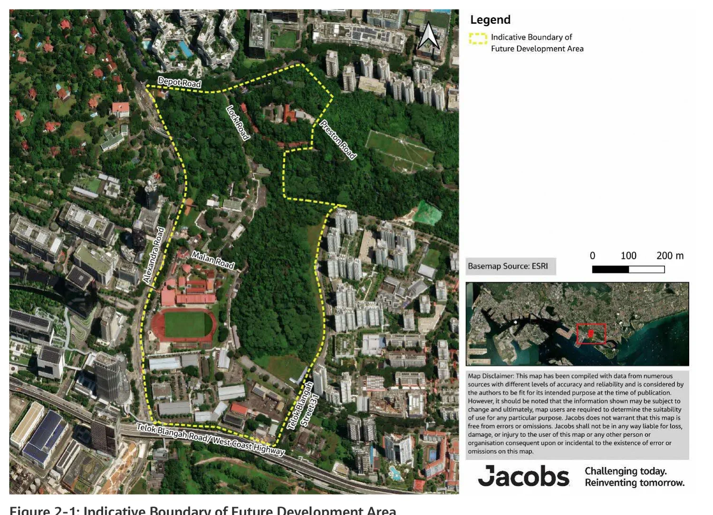
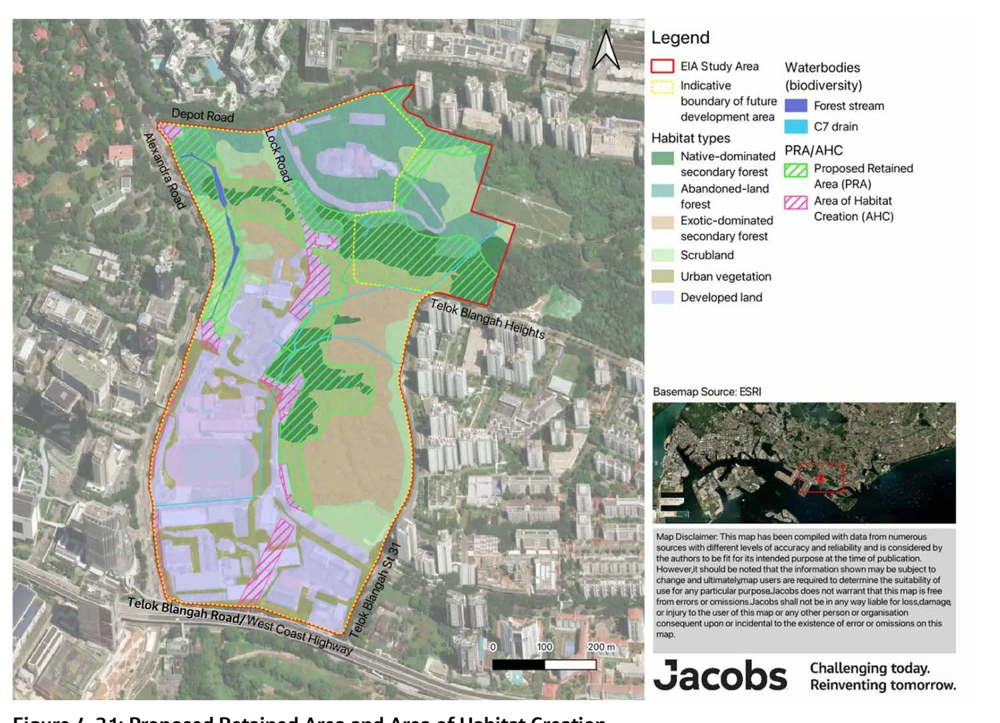
Tap either map to enlarge it. These are the assessors’ own maps, reproduced here so that residents can see the proposal, and they show what was proposed in July 2026. The Government has said the plans are not final.
Gillman Forest destruction according to the most recent plan the public has been shown
On 14 August the Government said more greenery will be kept at Gillman and fewer homes built. It has not said how much more, and no revised plan has been published.
What residents found in the report
The assessment above runs to 255 pages plus appendices. A resident read all of it, alongside NParks’ own Biodiversity Impact Assessment Guidelines, and found five things worth putting to the agencies. Every point below is drawn from those primary sources, and each ends with a specific, practical ask.
Compiled by a resident from CH2M Hill/Jacobs, “Specialist Consultancy Services for Environmental Impact Assessment (EIA) at Gillman Barracks”, final report, 8 July 2026 and its appendices, commissioned by NParks on behalf of HDB; and National Parks Board, “Biodiversity Impact Assessment (BIA) Guidelines”, May 2024. These are residents’ findings, not an official document.
The same map, marked up
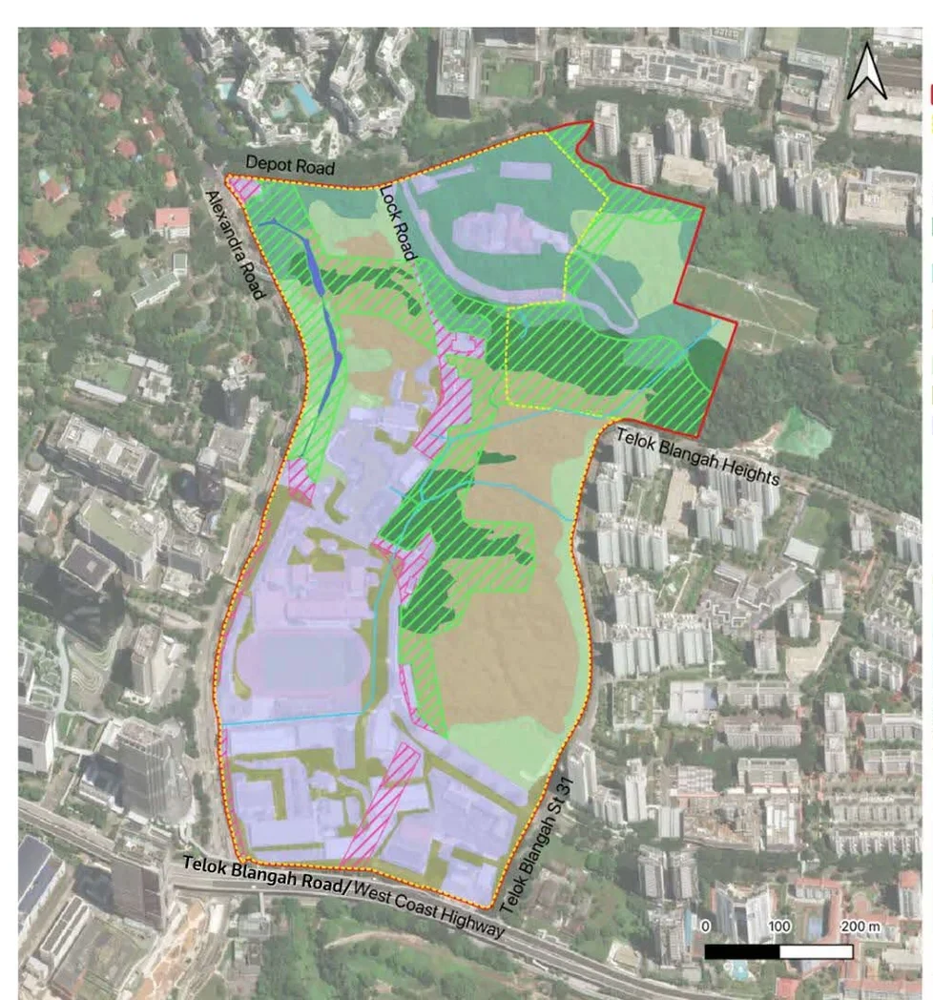
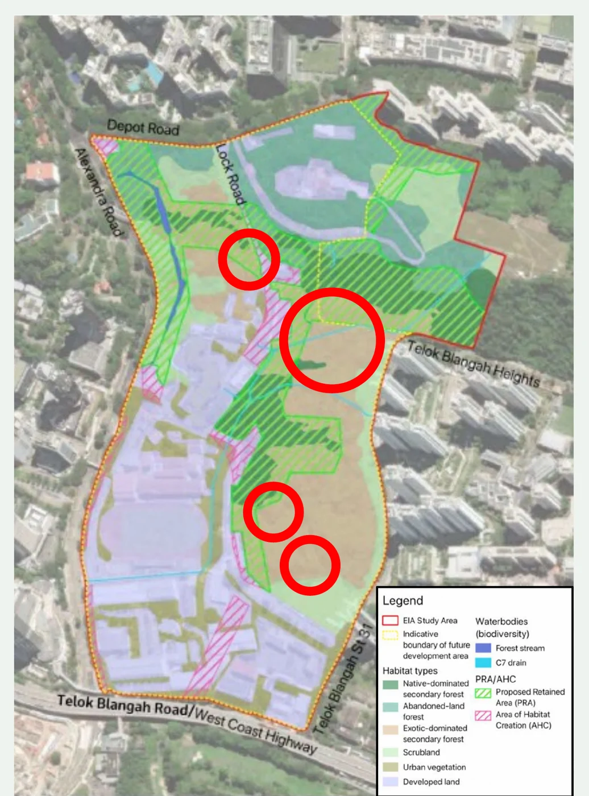
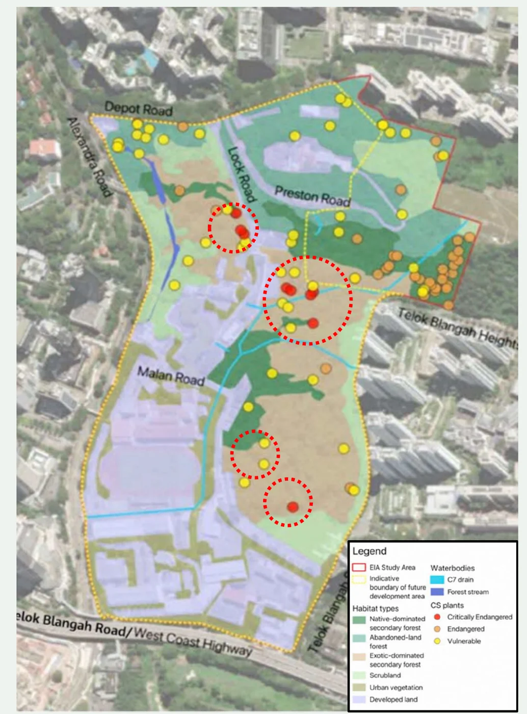
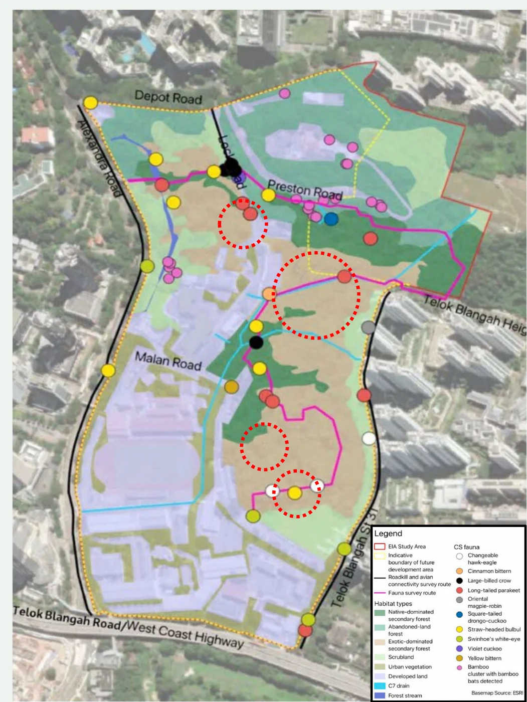
Base maps are the assessors’ own figures. The red markings were added by residents to show where the findings below apply. Tap any map to enlarge it.
Five findings
FINDING 1
A cluster of rare plants next to Telok Blangah Street 31 appears to fall outside the retained area, with no explanation for why it was not avoided
Critically Endangered and Vulnerable flora, together in one small patch, entirely outside the boundary the report itself calls its answer to “Avoid”.
The raw specimen records for the ground between two drain channels on the eastern boundary show a real concentration of conservation-significant flora, and the report’s own maps show no retained-area or habitat-creation coverage there at all (Figure 4-21). The pocket holds a narrow strip of native-dominated secondary forest, three Ficus sinuata, which is Critically Endangered, two clusters of Cissus repens, a Vulnerable climber, and a Vulnerable Litsea umbellata. Critically Endangered and Vulnerable flora, together in one small area, entirely outside the retained boundary.
The Ficus sinuata here are small and immature, under 5cm girth and up to 1.4m tall, and recorded in Appendix 4B as epiphytes, not trees. An epiphyte depends on a host tree, not soil. Transplanting keeps the plants alive but does nothing to preserve whatever conditions of this specific host tree and canopy microhabitat let a Critically Endangered species establish here in the first place. And the step itself is uncertain: the report’s own selection criteria weigh “survival rates post-transplantation”, yet no outcome data is reported for the site’s other transplants. The report does not explain why this clustering was not reason enough to extend the retained area instead.
The EIA structures its mitigation around a four-tier hierarchy, in order of preference: Avoid, Minimise, Restore, Compensate (Section 4.5, Figure 4-20), mirroring NParks’ own guidelines. Section 4.5.1, titled “Avoid”, names the 14.6ha retained area and area of habitat creation as the report’s answer to that top tier. By the report’s own definition this cluster sits outside that measure, and the response, salvage, is the bottom tier, described as a last resort for use “where site clearance is unavoidable” (BIA Guidelines, Table 5.1, p.75–76). No Minimise or Restore step appears in between, and the report never explains why. The phrases “inevitable” and “cannot be avoided” appear only as general descriptions of the hierarchy itself, never as justification applied to this specific location.
Any suggestion that this matters less because the area is exotic-dominated forest does not hold up against NParks’ own framework. The guidelines rank habitat value in three tiers (Table 2.18, p.36): Critical Habitat, Natural Habitat and Modified Habitat, and only the first two carry high conservation priority in Singapore. Critical Habitat is triggered by “habitat of significant importance to locally and globally Critically Endangered and/or Endangered species”, independent of vegetation type, and this cluster appears to qualify on that basis alone. The method is explicit too: consultants are to identify priority areas by overlaying species locations onto vegetation maps, since classification “depends on both its vegetation type and importance to species of conservation concern” (Section 2.4, p.36). The guidelines’ own worked example (Figure 2.2, p.37) captures species markers adjacent to higher-value habitat within the priority boundary even where the immediate area is lower-value. This cluster fits that pattern: it sits immediately alongside native-dominated forest. Where there is genuine uncertainty, the guidelines call for caution rather than proceeding regardless: “The precautionary principle and worst-case scenarios should always be applied when there is any doubt” (Section 7, p.89).
What we would like consideredExtending the proposed retained area by roughly 40m at this specific location, which would appear to cover the cluster in full. A modest, low-cost adjustment against a 40ha development area, for a disproportionate gain in protecting native-dominated secondary forest and Critically Endangered and Vulnerable flora.
FINDING 2
The fauna survey appears to fall short of NParks’ own published standards, for both birds and mammals
Neither point depends on any species’ conservation status. Both are structural gaps in survey design, checkable against the guidelines.
NParks’ guidelines require bird surveys to sample across both seasonal windows. Whether by point count or line transect, “each point should minimally be sampled once a month during the non-migratory season (April to August), and twice a month during the migratory season (September to March)” (Section 2.3.2, Tables 2.6–2.7). The EIA’s faunistic field surveys, including birds, ran from 21 October 2024 to 7 March 2025 (Section 4.2.4.2), entirely within the migratory season as NParks defines it, with no overlap with the April to August window at all. On the dates alone, the survey appears to have missed one of the two seasonal windows the guidelines call for.
A similar gap applies to the mammal survey. All seven camera traps were terrestrial only, mounted “approximately 20–30 cm above ground” and labelled “Terrestrial Camera Trap Set up”, despite the report elsewhere naming “birds (including forest interior species) and arboreal mammals” as the target species groups for its proposed ecological corridor (Section 4.5.1(g)). The guidelines describe camera trapping as having two distinct components, terrestrial at 30–50cm and a separate arboreal method mounted at least 3m above ground specifically to detect canopy-dwelling species (Section 2.3.4, Table 2.10, p.28). No arboreal cameras appear anywhere in the report. Camera density also falls short: the report states approximately one camera for every 6.25ha of forest, sparser than the recommended one every 3 to 5ha.
What we would like consideredA supplementary bird survey covering the non-migratory season, April to August, and a supplementary arboreal camera trap survey at the height and density NParks’ own guidelines specify, to complete the seasonal and methodological coverage the current survey appears to be missing.
FINDING 3
Two globally Critically Endangered parrots, and a celebrated hornbill, are missing from the headline count
All three are in the EIA’s own appendix. A definition applied in this report, but not found in NParks’ guidelines, keeps them out of the total.
The Oriental pied hornbill, a species NParks has publicly credited as a Singapore conservation success, is barely present in the assessment. The field survey recorded it once, incidentally, in nearly five months. It is absent from the 255-page main report entirely, since it was downlisted to Near Threatened in 2023 and no longer meets the technical bar for discussion. As set out in Finding 2, the survey window may not have been well suited to detecting it in the first place: a single incidental sighting is exactly what an incomplete survey design would produce. Residents have reported juvenile hornbills in Telok Blangah more recently than the survey period, which the study could not have captured.
Two globally Critically Endangered parrots, the Yellow-crested and Citron-crested cockatoo, do not appear in the official count at all. Both are recorded in the EIA’s own appendix (Appendix 1, Birds: Yellow-crested cockatoo, entry 15, p.7; Citron-crested cockatoo, entry 56, p.8). They are excluded because the report’s definition of conservation significance requires a species to be both native to Singapore and threatened, an “and” test that NParks’ own baseline guidelines do not call for. The guidelines define species of conservation interest purely by extinction risk, “at the global and/or local level” (p.19), and treat native or exotic status as a separate fact to report rather than a gate on conservation interest, confirmed across every taxon section including birds (p.25). Both cockatoos carry IUCN’s most severe classification regardless of origin.
The report classifies the hornbill and the Yellow-crested cockatoo identically, both “introduced resident breeder”, despite very different treatment elsewhere. NParks has repeatedly called the hornbill’s return a conservation success story. The cockatoo, under the same classification and more severely threatened globally, does not count at all, even though Earth.org (2024) notes that feral populations like Singapore’s could play a role in the species’ global recovery.
What we would like consideredThat all three species be discussed explicitly regardless of the technical threshold; that a follow-up survey across more than one season establish whether the hornbill is actually breeding on site, given the current record is a single incidental sighting; and clarification on whether the “native and threatened” test reflects NParks’ own methodology or a narrower construction adopted for this report.
FINDING 4
Even after mitigation, nine plant species still face declining health from edge effects alone
Being inside the retained area is not the same as being unaffected, and protection along Malan Road is deferred rather than confirmed.
This is a quantified risk, not a hypothetical one. Even after mitigation, nine plant species still face a “Moderate Negative” risk of declining health during construction from edge effects alone, not from direct clearance. The Endangered Litsea cf. castanea, for example, sits 16m from a forest edge, well inside the 20 to 30m range the report itself identifies as the zone edge effects reach into (Section 4.5.1(g), p.95, citing Beschta et al. 1987; Johnson and Ryba 1992; Matlack 1993; Murphy 1995).
Archidendron contortum and Macaranga griffithiana were initially assessed as facing no impact, since their specimens sit outside the cleared area, but the report downgrades this to “Moderate Negative” because at least half their individuals fall within 30m of the new forest margin. Ficus sinuata, Ficus vasculosa and Horsfieldia polyspherula remain “Moderate Negative” after salvage for the same reason. For Litsea cf. castanea the report states it “may be marked for salvation or transplantation during the environmental monitoring and management phase”, which defers the decision rather than settling it.
One specific illustration is the native-dominated forest along Malan Road. It could be argued that because this forest currently survives well, no additional buffer is needed. That does not hold up against the report’s own findings. The EIA defines forest edge effects as changes in microclimate “due to vegetation removal” (Section 4.4.5.1.2), meaning they are triggered by nearby clearing rather than showing up in advance of it. Today this forest borders low-intensity interim uses, event spaces, art galleries, dining and the Academy of Singapore Teachers (Section 2.2.2), not the construction activity and completed housing estate to come. Its current good health reflects the absence of that trigger so far, not resilience to it, and the report already predicts forest edge effects are “Likely” in native-dominated secondary forest at “Medium” intensity.
What we would like consideredA wider buffer wherever native-dominated forest and conservation-significant flora sit close to the construction boundary, including specifically along Malan Road, where current conditions do not reflect what construction and the completed estate will bring, and confirmed protection measures now rather than deferred to a later monitoring phase.
FINDING 5
The corridor linking Gillman to the wider forest network may be too narrow to function
A corridor works at its narrowest passable point, not its average. The generous 200m width sits inside the block already being kept.
Gillman Barracks is not isolated. The report places it partially within the Southern Ridges, a 10km corridor linking Mount Faber Park, Telok Blangah Hill Park, HortPark, Kent Ridge Park and Labrador Nature Reserve. Based on its own Straw-headed bulbul mapping, the EIA suggests Gillman Barracks itself “serves as a corridor between the Southern Ridges and Berlayar Creek”, potentially extending to Labrador Nature Reserve.
The report goes further than shared habitat and raises a shared population. Straw-headed bulbul and Changeable hawk-eagle have been recorded at both Gillman Barracks and the former Keppel Club site, leading the EIA to suggest these birds “could belong to the same metapopulation utilising this ecological corridor”. NParks has independently identified the same path in its own Ecological Profiling Exercise.
One might reasonably point out that most of the native forest here is being retained, but the report’s own conclusion anticipates that response. It states the corridor “expand[s] to approximately 200m within the native-dominated secondary forest”, so the generous width sits specifically within the forest block already being retained. The 30m minimum, by its own account, falls in the narrower connecting sections instead. The report concludes that “the wider retained areas compensate” for these, but a corridor’s function depends on its narrowest passable point, not its average. A well-preserved core does not help wildlife reach neighbouring parks if the stretch connecting them is constricted. Loss of connectivity is listed as a standard category of ecosystem impact in NParks’ own guidelines (Table 4.1, p.62), so this is a recognised impact type every assessment is expected to consider.
What we would like consideredThat the corridor’s narrowest sections be widened toward the report’s own 60m recommendation, rather than relying on wider areas elsewhere to compensate, given the report’s own suggestion that a shared metapopulation, not just shared habitat, may depend on it.
Two things that do not sit together
Same number. Opposite conclusions.
The report uses “30 years” to say native forest cannot be recreated and, in the same section, that exotic forest easily can. Neither claim carries a citation.
Same label. Different treatment.
The hornbill and the Yellow-crested cockatoo are both classified “introduced resident breeder”. NParks has called one a conservation success. The other does not make the count.
Two birds, one classification
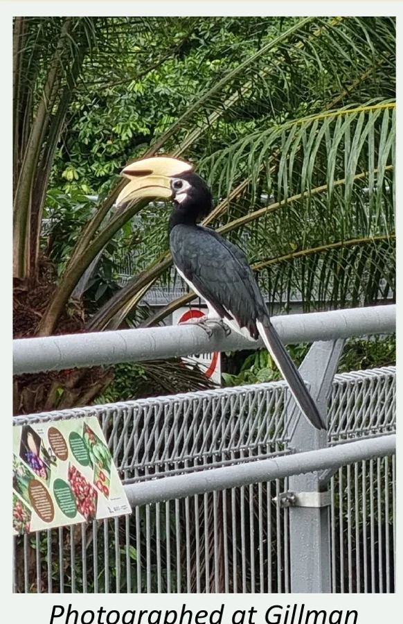
Oriental pied hornbill
Anthracoceros albirostris
Recorded once, incidentally, in nearly five months of surveying, and not mentioned anywhere in the 255-page main report. Juvenile hornbills were seen in Telok Blangah in July 2026, after the survey period closed.
Photographed at Gillman Barracks, June 2022.
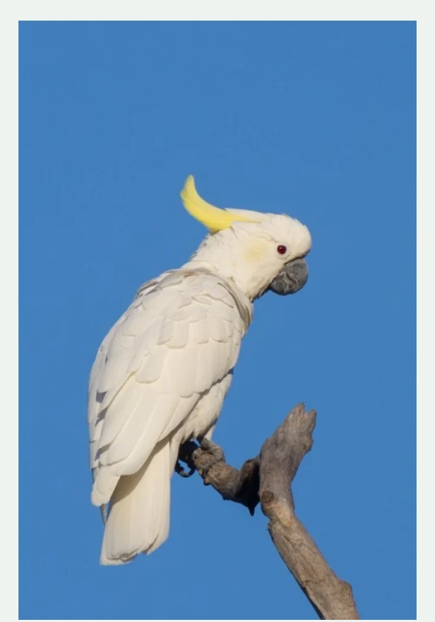
Yellow-crested cockatoo
Cacatua sulphurea
Critically Endangered globally. The EIA’s own checklist classifies it as an established, breeding population in Singapore. Earth.org (2024) notes that feral populations like this one could play a role in the species’ global recovery.
Photographed at Mount Faber. Photo credit: Francis Yap.
Scroll the table sideways to see every column.
| # | Species | Common name | IUCN global | Singapore | Counted? | Status in report |
|---|---|---|---|---|---|---|
| 13 | Anthracoceros albirostris | Oriental pied hornbill | Least Concern | Near Threatened | No | Introduced resident breeder |
| 14 | Cacatua goffiniana | Tanimbar corella | Near Threatened | NA | No | Introduced resident breeder |
| 15 | Cacatua sulphurea | Yellow-crested cockatoo | Critically Endangered | NA | No | Introduced resident breeder |
| 56 | Cacatua citrinocristata | Citron-crested cockatoo | Critically Endangered | Not Evaluated | No | Introduced |
Rows reproduced from the EIA’s own species checklist, Appendix 1, Birds. Two species carrying IUCN’s most severe global classification are marked “No” under species of conservation significance.
Read the findings in full
-
Findings from HDB’s own report, in fullPDF
All five findings with their citations, as submitted. Four pages.
-
Getting the balance right, the posterPDF
The same findings as two display boards, with the marked-up maps at full size. Used at residents’ sessions.
The official documents
-
Environmental Impact Assessment at Gillman Barracks, final reportPDF
Commissioned by the National Parks Board, prepared by CH2M Hill Singapore, part of Jacobs. Dated 8 July 2026, 255 pages. The source for both maps above, for the 10 to 15 year works period, and for the assessment of impact on habitats and species.
-
Heritage Impact Assessment at Gillman BarracksHDB
Prepared by the conservation consultancy Studio Lapis. Assesses all 86 buildings across seven clusters for historical, architectural, social and contextual value. Published on HDB InfoWEB alongside the environmental study.
-
HDB, planning with the environment in mindPage
The HDB page that hosts the impact assessments for Gillman Barracks and other sites. Any revised plans or the promised response to public feedback would be expected to appear here.
Write to HDB
A guide to filling in the HDB feedback
Fifteen minutes, in your own words, is enough. This page sets out where to send it, what to put in it, and the specific things worth asking for. You do not have to live nearby. Gillman belongs to all of Singapore.
The two consultation forms that ran until 6 August have been taken down. HDB has said engagement does not end with that deadline and has pointed residents to its general written feedback channel, and it has committed to publishing a report answering the feedback and setting out any changes to the plans. That report has not been published. Anything that arrives before it is written is something HDB has to answer.
Step one. Open the form
Go to HDB’s Write to Us form. Under Category of Feedback choose Land Use Plans, then write in your own words and submit.
One entry per person. Every adult at home can send their own.
Step two. Five short lines
- Who you are
- “I live in Telok Blangah and walk in Gillman Forest every week.” Or: “I don’t live nearby, but Gillman Barracks is part of my Singapore.”
- What you ask
- Pick one or two of the asks below. Two made well beat eight listed.
- Why
- In your own words. The walks, the birds, the shade, the old buildings, what your children would lose. Or the bigger picture, forest after forest going one by one.
- What you support
- “I’m not against new homes. I’m against losing what can never be rebuilt.”
- What happens next
- “Please hold dialogue sessions with residents, heritage groups and nature groups, and publish what the feedback changed.”
Step three. Choose your asks
These are prompts, not a script. Copied letters get counted once, so put them in your own words and they count on their own.
On the forest
- Put Gillman last in the queue, not first. Build the sites already cleared and zoned before touching fifty-year-old forest. In land-scarce Singapore, forest is the one thing we cannot make more of.
- Keep more of the forest. Replanting is not replacement. Decades to grow, months to clear.
- Even after mitigation, the harm remains. HDB’s own Environmental Impact Assessment says 58 of 83 species will still face “Major Negative” impact. Please think again while the plan can still be changed.
On the barracks and the setting
Heritage is the argument almost nobody is making. The Heritage Impact Assessment is a separate study from the environmental one, and these asks are specific enough to need a specific answer.
- Publish which six buildings are going, and why. The study rates 86 buildings and elements. Four are Exceptional and 27 are High, but only 21 of those 27 are being kept.
- Keep the Preston Road houses as a group. All 16 are rated High. They are a rare intact set of 1930s military family homes, and their value is in the whole cluster, not in single blocks left standing inside a new estate.
- Moderate does not mean expendable. Twenty-four buildings rated Moderate have no stated future. Please say what happens to them.
- Setting is heritage too. Lock Road, Malan Road, Preston Road and the ravine are all rated High in the study itself. Please keep the landscape that makes the buildings legible.
- The woodland east of Malan Road covers the site of the original barrack cluster and parade square. Clearing it is a heritage loss as well as an environmental one.
Three things that matter
- Use your own words. Copied letters are counted once. Yours counts on its own.
- Keep it real and factual. What you see and use there beats any slogan.
- Leave politics out. We are residents giving planning feedback. That is our strength.
It has worked before. In 2021, Dover Forest drew around 50,000 signatures and nearly 1,800 written submissions. The plans changed and the western half of the forest was kept.
Species figure from HDB’s published Environmental Impact Assessment (CH2M Hill/Jacobs, 8 July 2026), Table 4-37. Building ratings from the Heritage Impact Assessment prepared by Studio Lapis. Both are linked in full on .
Stay in the loop
Join the residents’ group
Follow what’s happening, track the campaign, and lend your voice. The more of us there are, the harder we are to ignore.